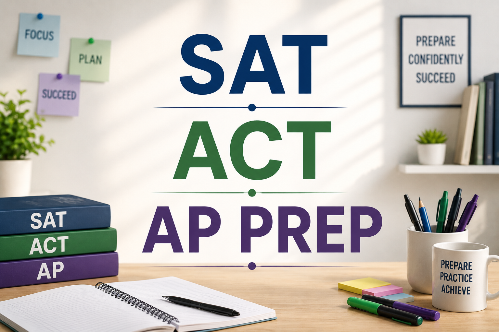

Preparing Students for Important Exams
We provide test preparation for students preparing for AP exams, the SAT and the ACT. Preparation is built around the student's current level, the exam they are taking and how much time they have before the test.
The focus is not only on going through the material. Students also get regular practice with exam-style questions and work on areas where they need more attention.

SAT, ACT and AP Courses
AP Statistics
AP Statistics is designed for students who want to understand how statistics are used to make sense of data and draw conclusions. Students work with concepts from probability, data analysis and statistical inference while learning how to approach the types of questions they can expect on the AP exam.
AP Calculus
AP Calculus takes students beyond the algebra and geometry they have already studied and introduces them to the ideas of change, motion and accumulation. Preparation covers the concepts students need for the exam while giving them plenty of opportunity to work through calculus problems and improve their accuracy.
AP Biology
AP Biology covers a wide range of biological concepts and requires students to understand processes rather than simply memorize information. Preparation helps students work through the material, connect different biological ideas and become more comfortable with the questions and reasoning expected on the AP exam.
AP Chemistry
AP Chemistry involves both conceptual understanding and quantitative problem solving. Students need to be comfortable working with chemical principles and applying them to unfamiliar problems. Preparation focuses on strengthening those fundamentals and giving students regular practice with AP-style questions.
AP Physics
AP Physics requires students to understand physical principles and apply them to different situations, often using mathematical reasoning. Preparation gives students the opportunity to review difficult concepts, work through problems step by step and become more comfortable with the style of questions found on the AP exam.
SAT
The SAT requires students to work efficiently across its Reading and Writing and Math sections. Preparation helps students understand the types of questions they will encounter, identify areas where they are losing marks and become more comfortable working under the time constraints of the exam.
ACT
The ACT covers English, Math, Reading and Science, with an optional Writing section. Preparation focuses on building familiarity with the exam, improving accuracy and helping students manage their time while working through different types of questions.